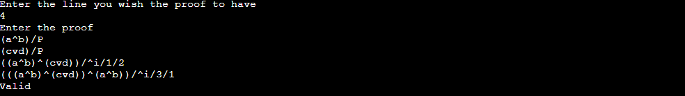
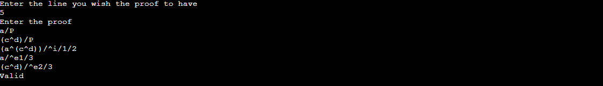
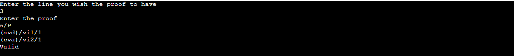
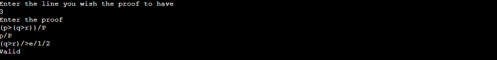
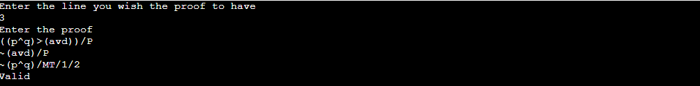
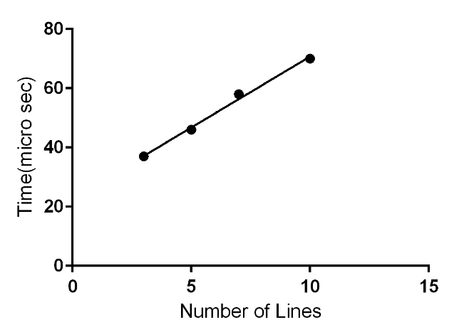

Algorithm Implemented
Step 1: Input the number of lines and make an array(of strings) of the same size as the number of lines inuted.
Step 2: Input the lines of proof in form of strings in a variable (say w) and check which sort of operation is used and apply the method appropriately.
Step 3: Make an If-Else ladder which checks which prrof is used and sends the proposition and its the lines into consideration accordingly to the funcions.
- Premise- With the help of substring extract the premise from the input and store it into the array.
- And Introduction- Pass the array and string which we get after applying the rule and the line numbers to the function. In the function get the propositional atom according to line number and construct the right proposition that should be formed and compare it with inputed line and return thr boolean value accordingly.
- And Eliminiation 1 and 2- Pass the array and string which we get after applying the rule and the line number to the function for checking. Extract the part of the string of line number by stack and compare it with the inputed string if matched return true else return false.
- Or Introduction 1 and 2- Pass the array and string which we get after applying the rule and the line number to the function for checking. Check with the inputed string that the part before or after Or symbol ('v') is matching the string in line or not. Pass the value in boolean accordingly.
- Implication Eliminiation- Pass the array and string which we get after applying the rule and the line numbers to the function for checking. Construct the appropriate out put using the strings in the inputed line by firstly matching the part before implication sign ('>') and extracting the right hand side part of implication. Match the extracted part with the inputed string and return true or false accordingly.
- Modus Tollens- Pass the array and string which we get after applying the rule and the line numbers to the function for checking. Check the proposition in the line numbers check if the right hand side of the implication sign ('>') matches if negated with the other line. Then extract the left and side of the implicaion sign and negate it after that match with the inputed string and return boolean value.
Step 4: Once the rule implemented is checked it will return a boolean if its false stop taking input and print "invalid" if its true add the string to the array and carry on taking inputs.
Step 5: If all lines are inputed and no false value is returned then print "valid".
To See the Implemented Code
Sample Output
And Introduction
And Eliminiation
Or Introduction
Implication Elimination
Modus Tollens
Time Complexity :
O(n)
Auxillary Space Complexity :
O(n)
Graph for Time Complexity
Further Rules
1. For extending the current algos to further rule we just need to add them is already created main in the if-else ladder
2. For implementing double negation Elimination and Introduction we need to just just the presence of the '~' and act accordingly
3. For Implication Introduction we need to pass the lines on which it has occured check each rules that went under the block of lines if they right then see if the implication is n forst and last line and if its done right or not.
4. Or Elimination is a tricky part in it we need to check 2 blocks of different rules and check if the last line of each block corresponds to the desired output of the Or elimination
5. Similarly any other rule can be implementedby string manupulation and appropriate passing of values to the functions of each rule